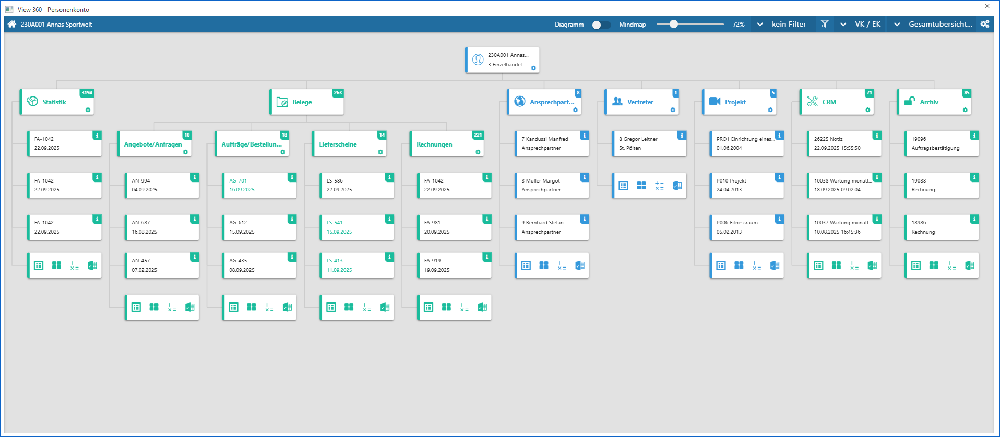
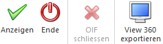

Die View 360 bietet eine graphische Aufbereitung von WinLine Objekten und deren Verbindungen untereinander. Der Aufruf erfolgt per DrillDown (Funktion "View 360") oder über die Anwahl des Ribbons-Buttons "View 360" an folgenden Stellen:
ü Programm "Verkaufsstatistik Tabelle" (DrillDown)
ü Objekt "Beleg" (DrillDown)
ü Programm "Belege / Belege - Matchcode" (Ribbon-Button)
ü Objekt "Personenkonto" (DrillDown)
ü Objekt "Interessent" (DrillDown)
ü Objekt "Ansprechpartner / Kontakte" (DrillDown)
ü Objekt "Vertreter" (DrillDown)
ü Objekt "Artikel" (DrillDown)
ü Objekt "Projekt" (DrillDown)
ü Objekt "Arbeitnehmer / Mitarbeiter" (DrillDown)
ü Objekt "CRM-Fall" (DrillDown)
ü Programm "CRM-Fallansicht" (Ribbon-Button)
ü Objekt "Archiveintrag" (DrillDown)
ü Programm "DataCenter" (Ribbon-Button)
Hinweis
Die View 360 dient als Ausgangspunkt zur Informationsbeschaffung. D.h. über diverse Funktionen innerhalb der View 360 können weitere Informationen zu den einzelnen Objekten angezeigt werden.

Innerhalb der View 360 werden die Verbindungen der folgenden Objekte analysiert und graphisch dargestellt, wobei das Ausgangsobjekt immer als Ausgangspunkt der Analyse dient:
ü Statistikzeilen (WinLine FAKT)
ü Belege (WinLine FAKT)
ü Personenkonten (WinLine FIBU / WinLine FAKT)
ü Interessenten (WinLine FAKT)
ü Ansprechpartner / Kontakte
ü Vertreter (WinLine FAKT)
ü Artikel (WinLine FAKT)
ü Projekte (WinLine FAKT)
ü Arbeitnehmer / Mitarbeiter (WinLine LOHN / WinLine SMART)
ü CRM-Fälle
ü Archiveinträge
ü FORM-Erfassungen
Hinweis
Es werden in der View 360 die Verbindungen zu anderen Objekttypen analysiert und nicht innerhalb des gleichen Typs nach zusammenhängen gesucht.
Beispiel
Über den DrillDown "View 360" wird bei einem Vertreter die View geöffnet. Die WinLine analysiert nun folgende Zusammenhänge und stellt diese in der View 360 da:
ü In welchen Statistikzeilen kommt der Vertreter vor?
ü In welchen Belegen kommt der Vertreter vor (Belegkopf)?
ü In welchen Personenkonten / Interessenten wurde der Vertreter hinterlegt (Register "FAKT")?
ü In welchen Projekten wurde der Vertreter hinterlegt (Register "Stamm")?
ü In welchen CRM-Fällen kommt der Vertreter vor?
ü In welchen Archiveinträgen kommt der Vertreter vor (als Schlagwort)?
ü In welchen FORM-Erfassungen kommt der Vertreter vor=
Die Objekttypen "Ansprechpartner / Kontakte", "Artikel", "Arbeitnehmer / Mitarbeiter" (ein Vertreter kann in keinem der Objekte hinterlegt werden) und "Vertreter" (gleiche Objekttyp) kommen hierbei nicht zur Anwendung!
In den nachfolgenden Kapiteln werden die einzelnen Bereiche und die Bedienung der View 360 detailliert erläutert.
ü Übersicht
In diesem Kapitel wird
der Aufbau und die Bedienungsmöglichkeiten der View 360 beschrieben.
ü Einstellungen
In den Einstellungen
können individuelle Einstellung für die Anzeige und das Programmverhalten
getroffenen werden.
ü Vorlagen
Mit Hilfe von Vorlagen
können View 360-Einstellungen unter einem Namen abgespeichert und bei Bedarf
geladen werden.
ü Widget-Einstellungen
In den
Widget-Einstellungen kann der Inhalt der Kachel und der weiteren Ausgaben
(Tabelle und Excel) definiert werden.
ü Filter
Mit Hilfe des Filters kann
die View 360 pro Objektgruppe nach frei definierbaren Kriterien eingeschränkt
werden.
ü Tabelle
Über die Tabelle der View
360 kann man sich alle verknüpften Objekte einer Objektgruppe anzeigen lassen
(inklusive Detailinformationen).
Buttons

Ø Anzeige
Durch Anwahl des Buttons "Anzeigen" bzw. der Taste F5 wird die View 360 aktualisiert.
Ø Ende
Bei Anwahl des Buttons "Ende" bzw. der Taste ESC wird die View 360 geschlossen.
Ø OIF schließen
Wurde die Detailansicht zu einem Objekt aufgerufen, so kann dieser Bereich mit Hilfe dieses Buttons wieder geschlossen werden.
Ø View 360 exportieren
Mit Hilfe dieses Buttons kann die grafische Übersicht der View 360 exportiert werden. Hierzu öffnet sich der "Datei speichern"-Dialog in welchem Speicherort und Dateiname vergeben werden können. Die Datei wird anschließend im Format "png" (Portable Network Graphics) gespeichert.